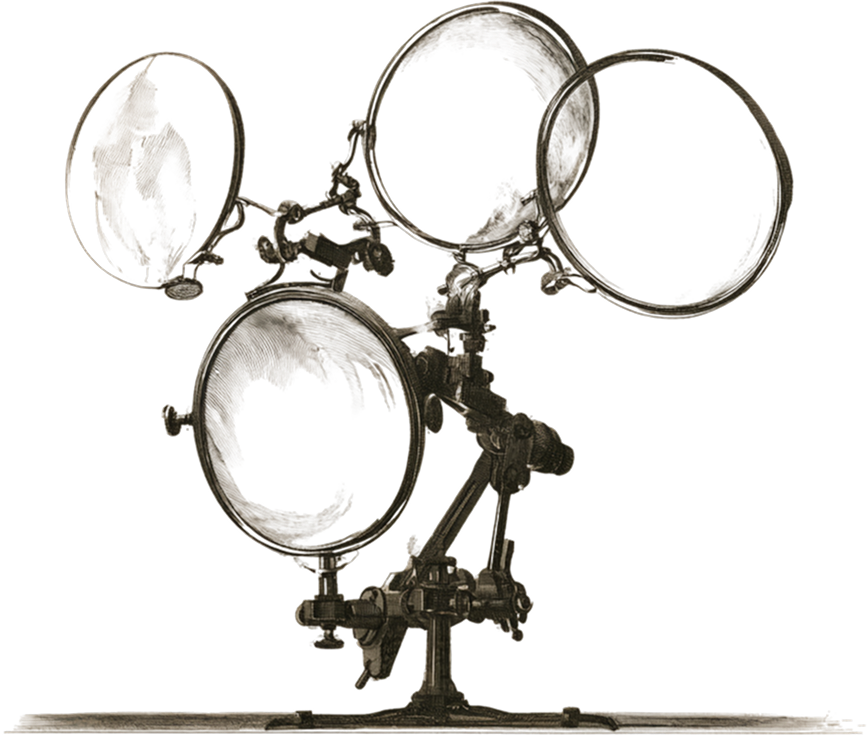
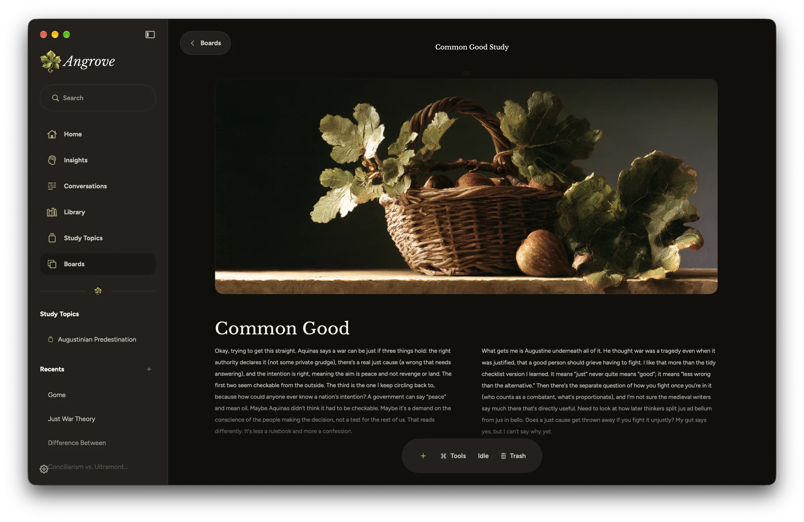
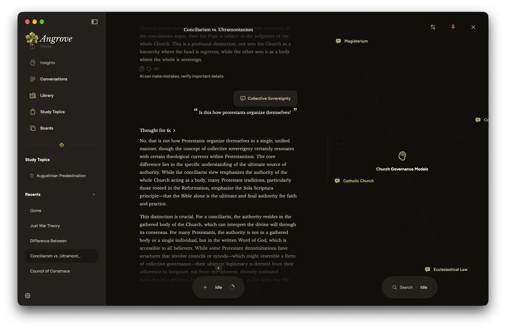
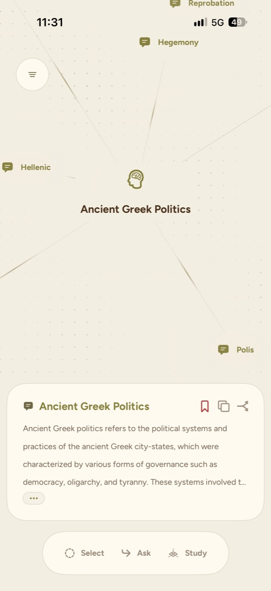
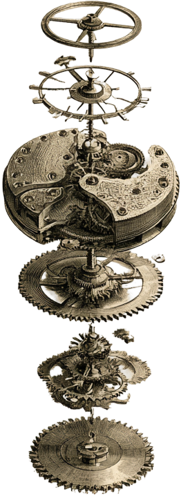
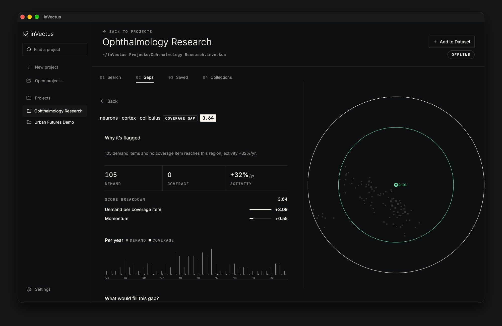
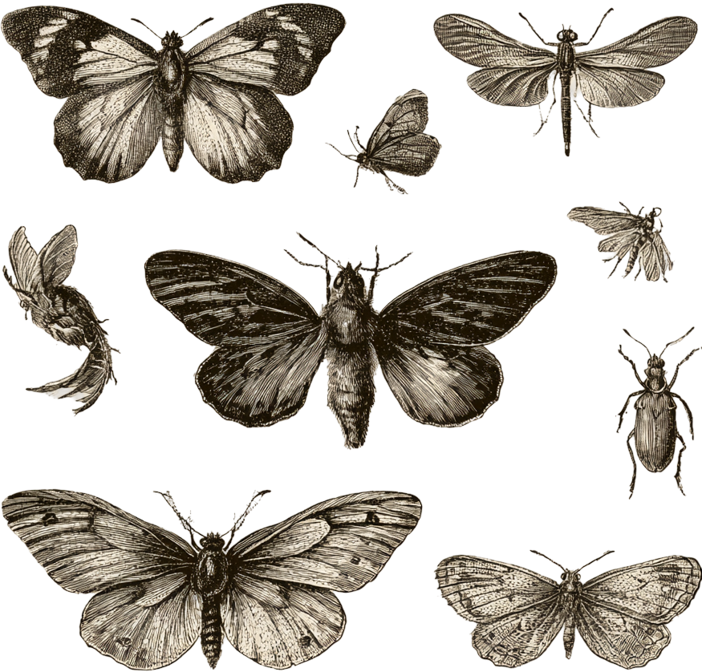

A field guide · Volume I · 2026
Ryan Baltodano
Interfaces, software, and other observations.
I’m a designer who codes. This is a small collection of what I’ve built, and what I noticed while building it: Angrove, a private study app, and inVectus, a research tool for Mac.

The exhibits
Two works, in use and in progress
Public betaon iPhone
Exhibit I · Study software
Angrove
A private study app for philosophy and theology.
Conversations, notes, and related ideas stay together on your iPhone or Mac.
- Habitat
- iPhone & Mac
- Medium
- SwiftUI

Fig. 2–3 Further specimens



In development
Exhibit II · Research software
inVectus
A local-first research tool for Mac.
Map a collection of papers, find gaps in its coverage, and inspect the evidence behind each one.
- Habitat
- Mac
- Medium
- React, TypeScript, Rust

Observations
Field notes on interfaces
Small things I noticed while building the exhibits, kept so I remember why they matter.
-
Entry 01Show the numbers behind a judgmentinVectus
When software makes a call for you, its reasoning belongs on the same screen. A flagged gap in inVectus shows demand, coverage, and activity above the score, so the verdict can be checked rather than trusted.
-
Entry 02A claim should name its scopeinVectus
Wording is interface. “A gap in this collection” and “a novel idea” look alike in a label and mean very different things. The copy has to say which one the software can actually support.
-
Entry 03Notes want a place, not a scrollAngrove
A chat is a sequence; study is spatial. Giving notes a named board, with room for an image beside the writing, lets ideas sit next to each other instead of scrolling away.
-
Entry 04Test the default before choosing itAngrove
Most people never change a default, so the default is the product. Before choosing Angrove’s, I ran it through an 80-case evaluation.
-
Entry 05Keep the way back within reachAngrove
Boards, conversations, the library, and study topics share one sidebar. Moving between kinds of work should never feel like leaving the room.
Record
Client work and instruments
Web design and front-end development, alongside my own software.
| Years | Institution | Role |
|---|---|---|
| 2024 to now | PostcardMania | Web designer |
| 2024 | Cloud Carpenter | Front-end intern |
Instruments
Figma, SwiftUI, React, TypeScript, Rust, HTML & CSS, Python, SQLite.



Correspondence
Write to me
I’m available for work, and always glad to compare notes on interfaces and software.